ASA Membership Campaigns (2024–2026)
Social Media Campaign Design | Marketing Design | Digital Graphics
Designed a series of digital marketing campaigns for the American Sociological Association (ASA) across multiple membership cycles. Created engaging social media graphics and promotional materials that highlighted membership benefits, organizational initiatives, and events while maintaining the association’s established brand identity. Each campaign emphasized clear visual hierarchy, accessible typography, and cohesive layouts to deliver professional, informative content across digital platforms.
Adobe Illustrator • Adobe Photoshop • Adobe InDesign
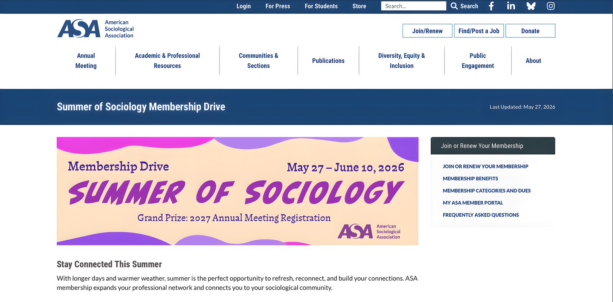
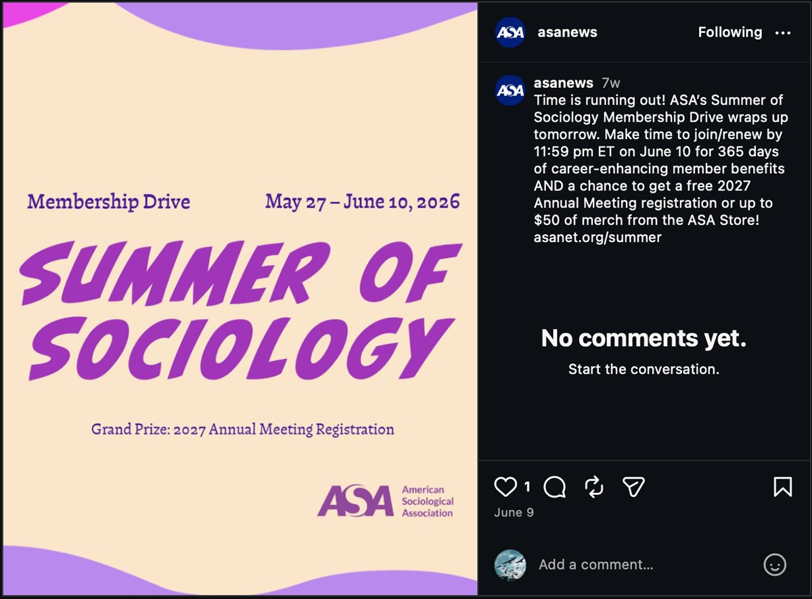
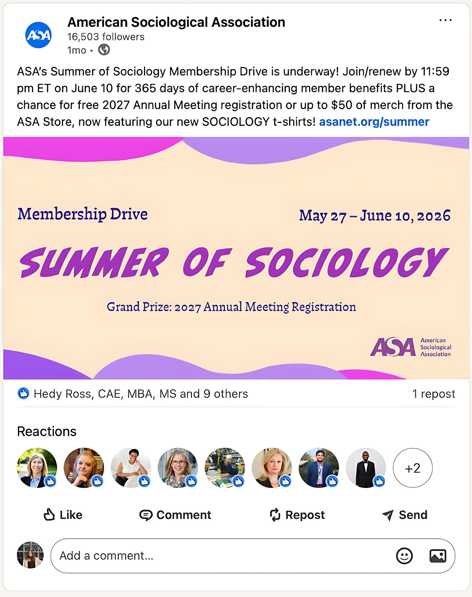
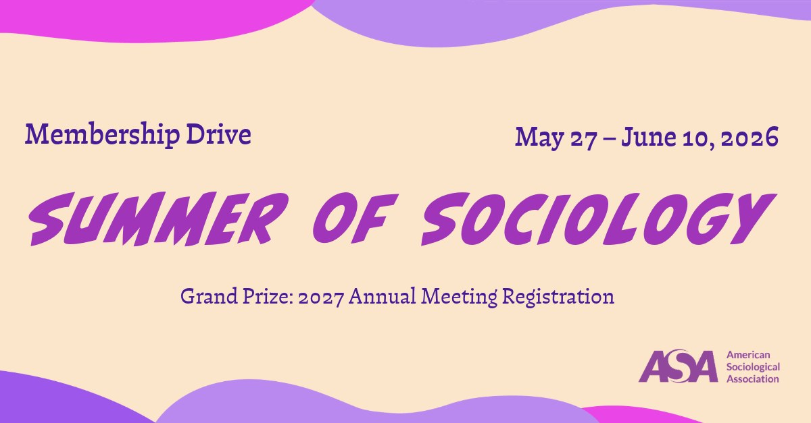
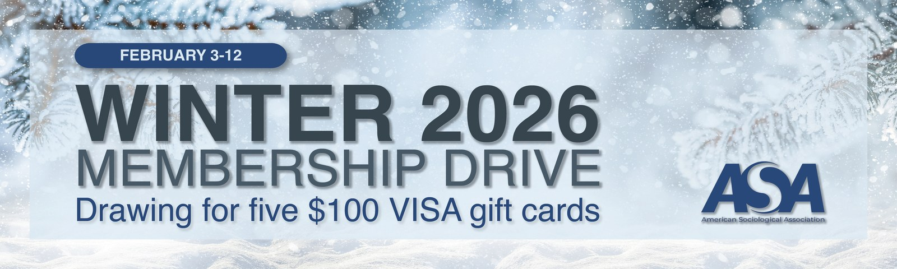
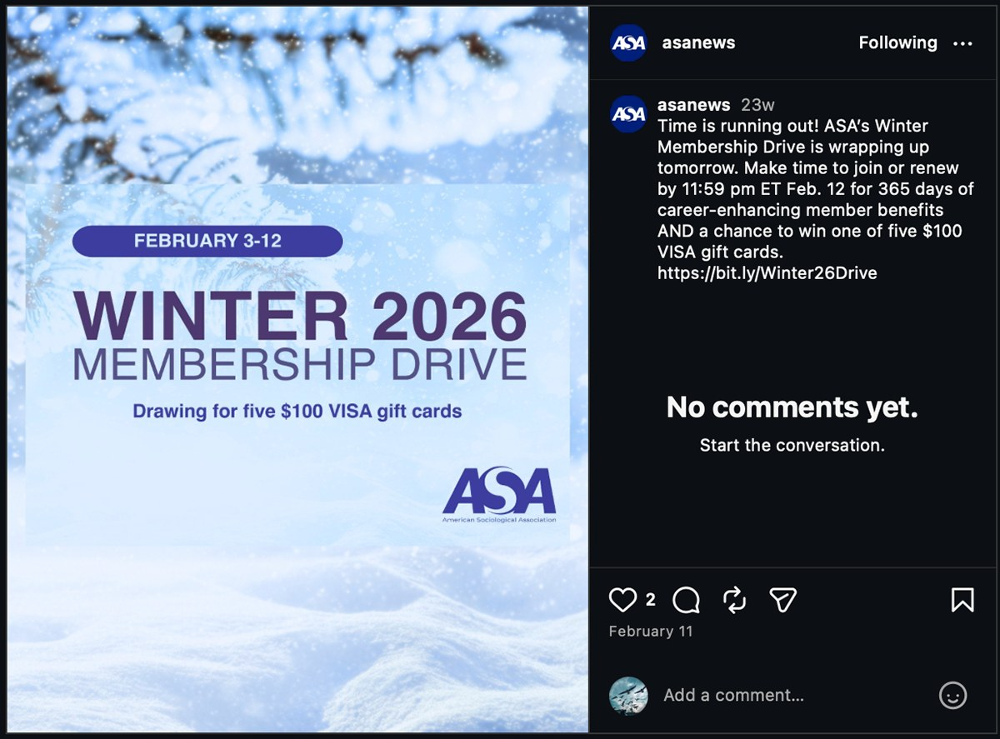
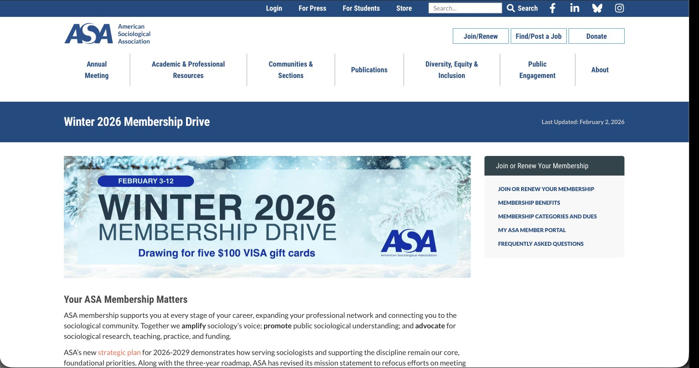
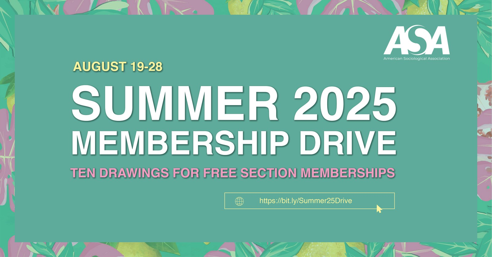
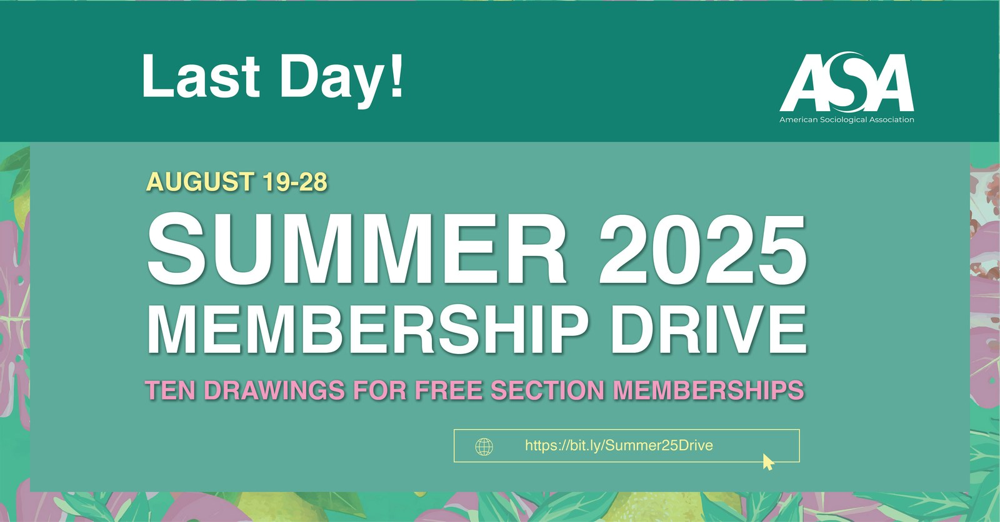
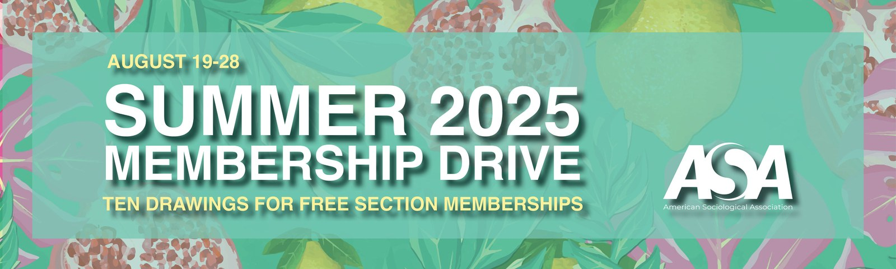
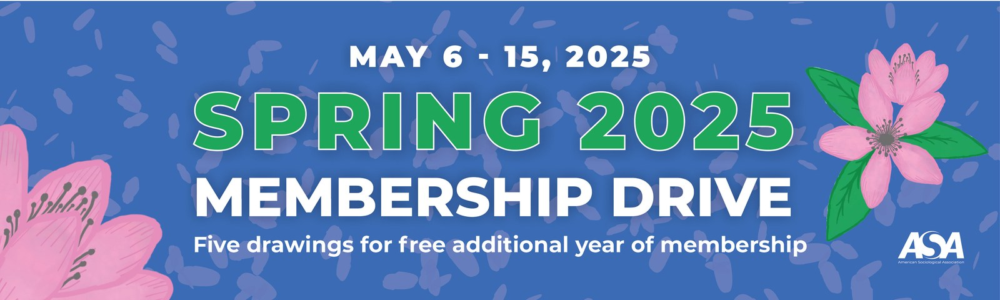
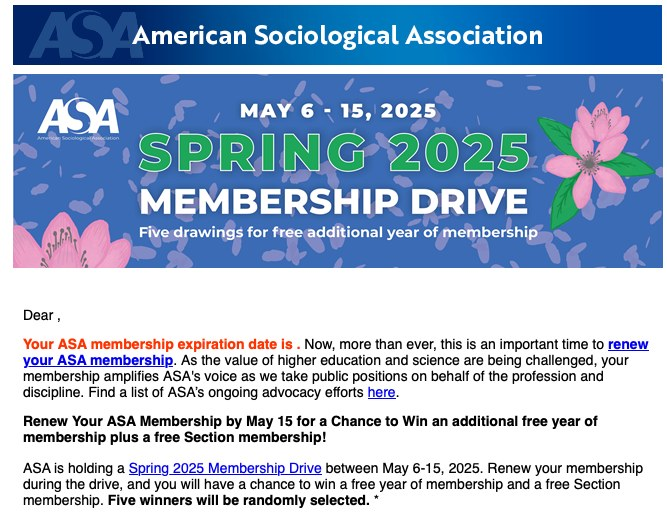